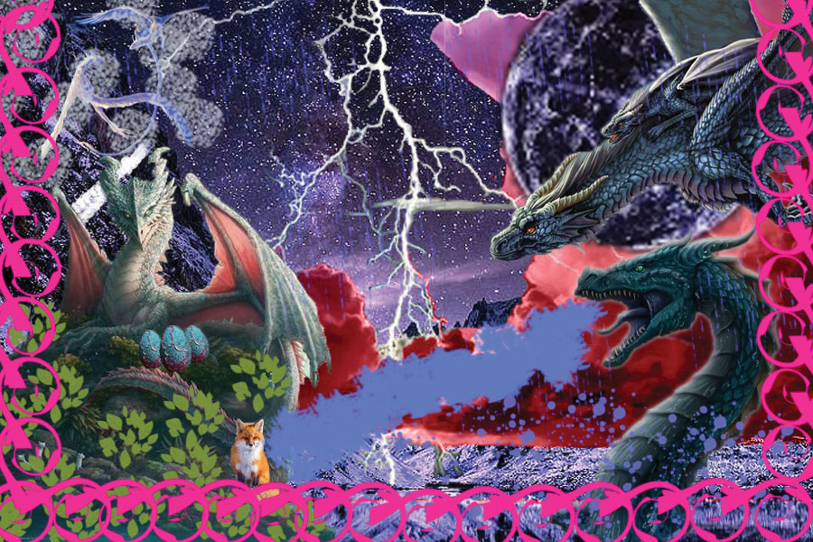

Raster graph was the very first thing we had learned from the semester, which was pretty excited. For my raster graph, I found couple different kinds of dragon for the project because I personality pretty like dragons. Then, try to fit every dragon into every corner. To make the scene looks like ancient times.